1C. Persiapan Belajar Bahasa C
Untuk mulai belajar atau memprogram dengan bahasa C, kita butuh program text editor dan compiler atau gabungan dari text editor dan compiler yang biasa disebut IDE (Integrated Development Environment). Text Editor/IDE sebagai tempat kita menulis dan mempermudah kita dalam proses penulisan kode kode bahasa pemprograman. Sedangkan compiler, sama seperti yang sudah dijelaskan di tutorial sebelumnya.
Text Editor/IDE
Di tutorial ini kita akan menggunakan IDE Visual Studio Code buatan Microsoft. IDE ini Open Source dan memiliki banyak plugin dan tema yang menarik. Untuk file installer dari Visual Studio Code, kita bisa unduh disini. Kemudian pilih sesuai dengan Sistem Operasi dan Arsitektur yang kita gunakan.
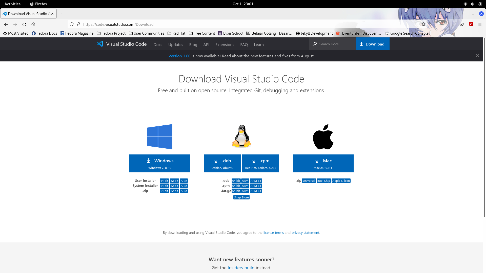
Karena saya menggunakan Fedora, maka saya memilih ".rpm".
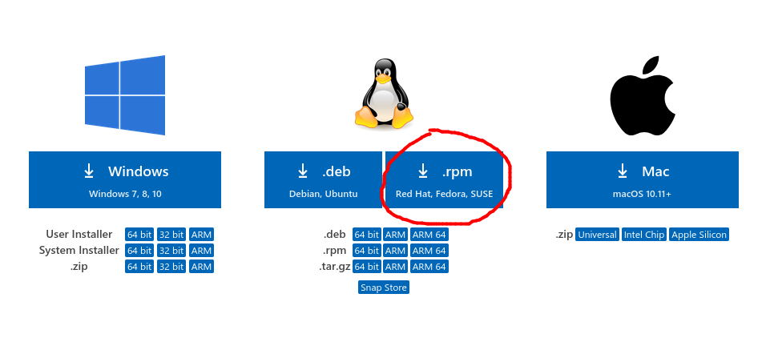
Setelah memilih ".rpm", file installer otomatis akan terunduh.
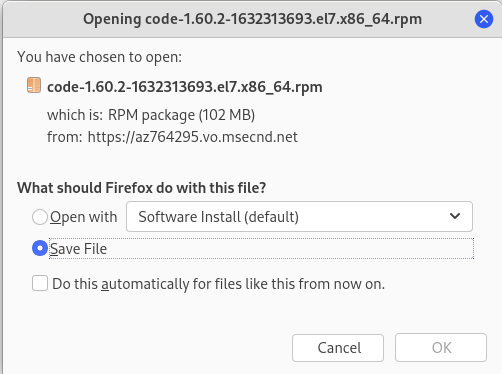
Setelah proses download selesai, kita bisa menemukan file installer yang ada di direktori Downloads. Double klik pada file installer-nya maka program instalasi fedora akan terbuka.
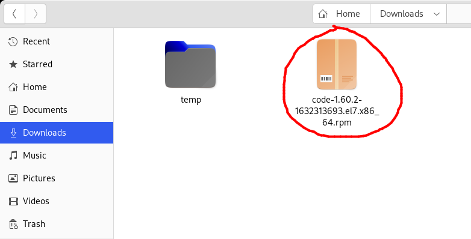
Klik tombol install(tombol yang sudah saya tandai). Pada gambar dibawah, tombol-nya bertuliskan Launch. Ini karena saya sudah menginstall program Visual Studio Code-nya terlebih dahulu.
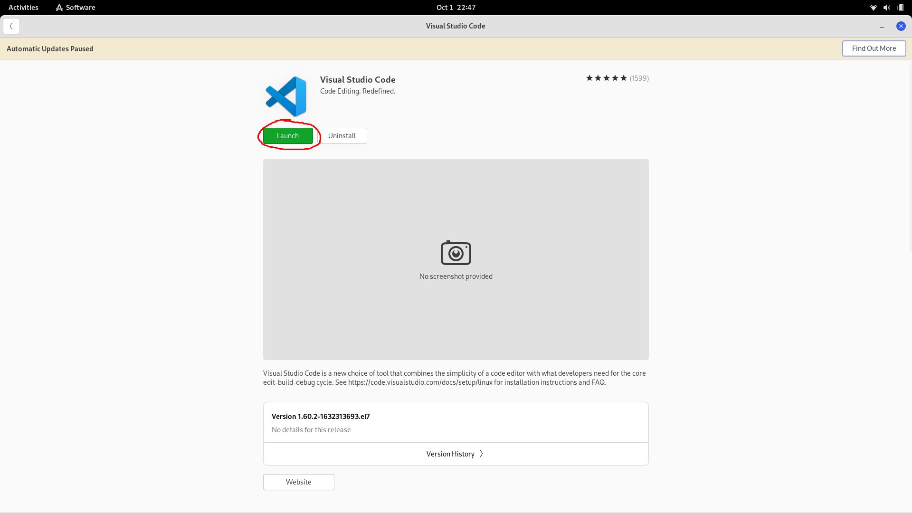
Fedora akan menginstall secara otomatis Visual Studio Code. Untuk instalasi Visual Studio Code menggunakan Terminal, Snap Store ataupun pada distro lain, silahkan kunjungi halaman ini.
Compiler C
Di tutorial ini kita akan menggunakan compiler "GCC" dari project GNU. Untuk menginstall compiler ini cukup mudah dengan menggunakan package manager, karena semua distro linux memiliki GCC di repository-nya dan bahkan beberapa juga sudah menyertakan GCC secara default.
Pada Fedora, silahkan buka Terminal kemudian ketikkan "sudo dnf install gcc" (tanpa tanda petik) lalu tekan enter.
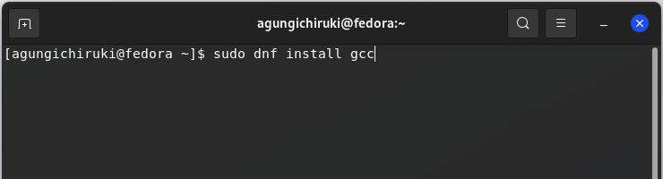
Kemudian masukkan password kita lalu tekan enter.
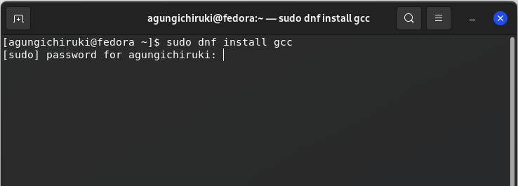
Package manager akan menginstall GCC pada distro linux kita. Karena saya sudah lebih dulu megninstall GCC, maka pesan yang tampil adalah "Package is already installed".
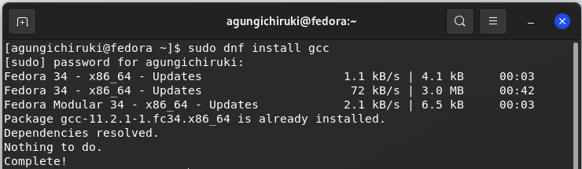
Untuk mengecek versi GCC yang terinstall, ketikkan "gcc --version" (tanpa tanda petik).
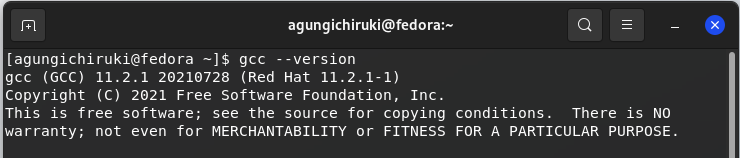
Bagi pengguna distro linux Debian dan turunan-nya bisa menginstall dengan perintah "sudo apt install gcc" (tanpa tanda petik).
Bagi pengguna distro linux Arch dan turunan-nya bisa menginstall dengan perintah "sudo pacman -S gcc" (tanpa tanda petik).
Sampai disini, compiler GCC sudah sukses terinstall di distro linux kita.
Bonus : Install Visual Studio Code di Microsoft Windows 7/8/10
Bagi yang menggunakan Microsoft Windows 8, 7, atau 10, silahkan pilih "windows".
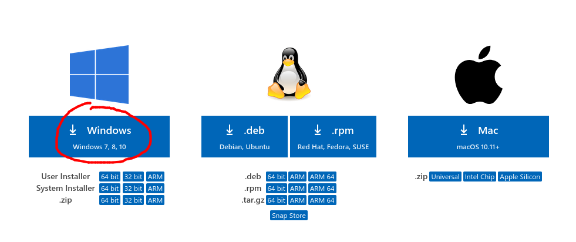
Setelah proses download selesai, kita bisa menemukan file installer yang ada di direktori Downloads. Double klik pada file installer untuk memulai proses instalasi.
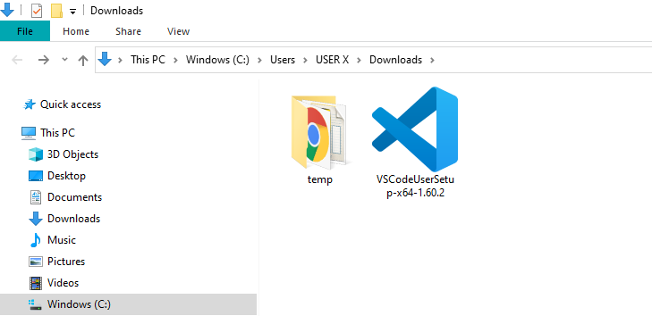
Setelah jendela instalasi terbuka, klik tombol Run.
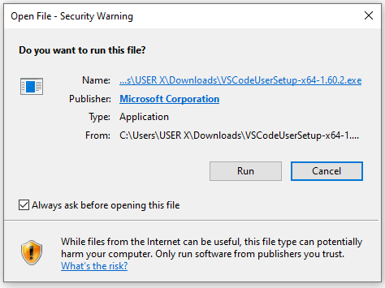
Kemudia pilih "I accept the agreement" lalu klik tombol Next.
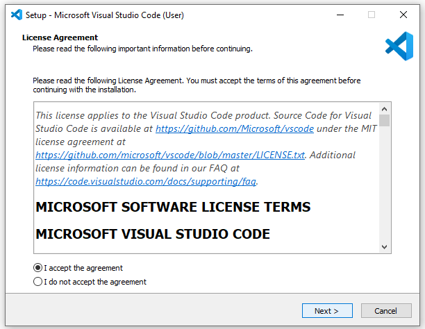
klik tombol Next.
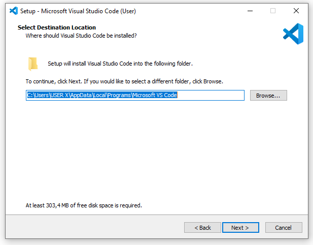
Kemudian klik tombol Next lagi.
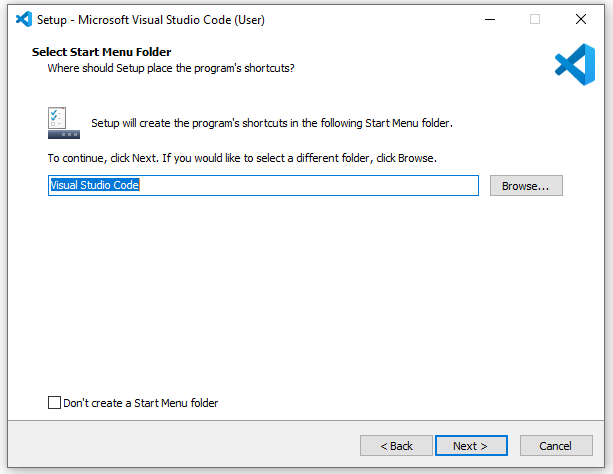
Saya tau ini sedikit menyebalkan, tapi kita harus klik tombol Next lagi.
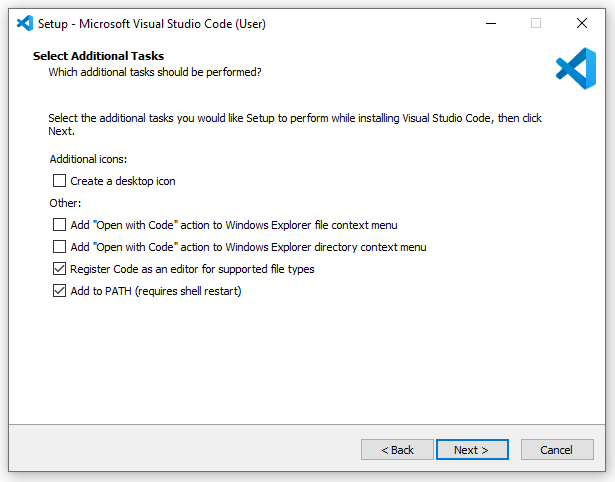
Untuk yang terakhir kalinya, kita harus klik tombol Next lagi.
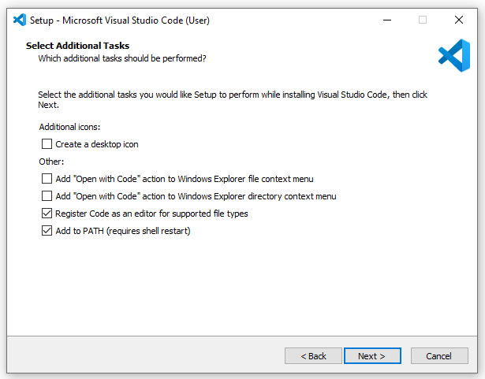
Setelah itu klik tombol Install.
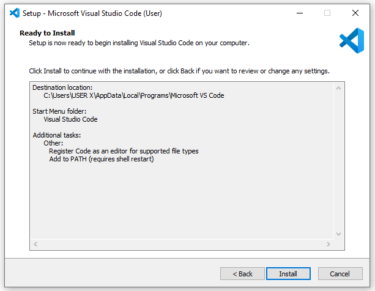
Tunggu hingga proses instalasi selesai.
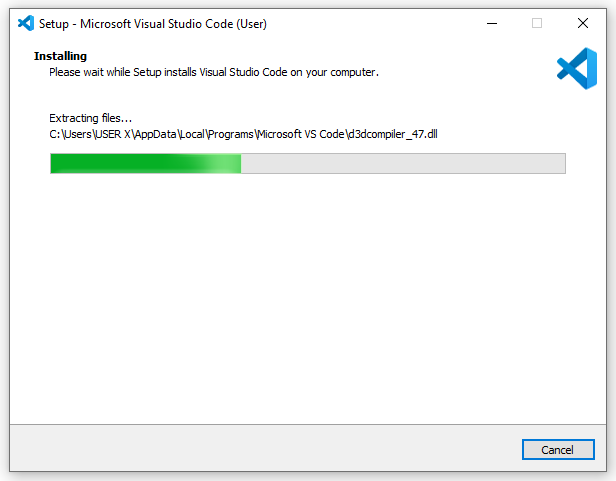
Setelah proses selesai, klik tombol Finish
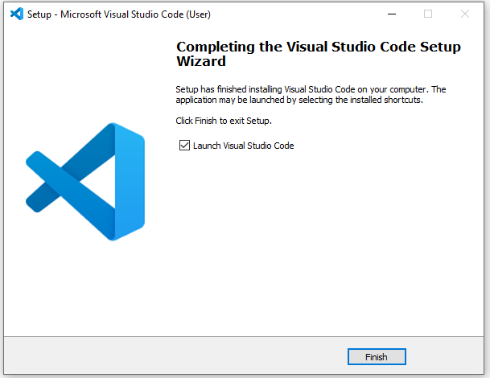
Sampai disini, Visual Studio Code sudah berhasil terinstal di Sistem Operasi Microsoft windows kita.
Untuk yang menggunakan sistem operasi lain, silahkan googling buat cara install IDE visual Studio Code dan compiler C untuk sistem operasi yang sesuai. Di tutorial selanjutnya kita akan membahas Struktur Dasar Bahasa C.